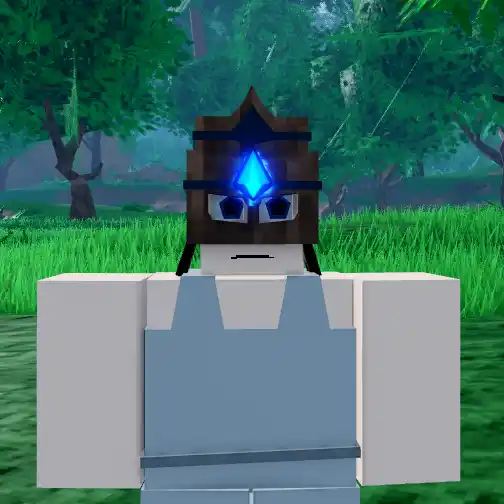
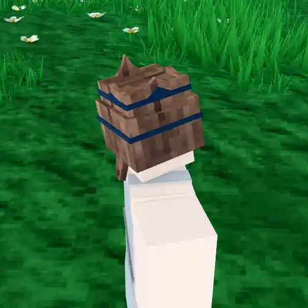

Tid's Bucket

Info
Slot: Head
Recolorable?: Yes
Unique Colors: Wood Colors
Particle Effects: Yes
Sound Effects: None
Owner: Tid
Appearance & Effects
In-game description: doesnt fit quite right
Tid's Bucket is an ornate, upside-down bucket that is placed over the player's head. It has cut-out eye holes and a gem embedded in the forehead. The bucket is made of wood, and comes with multiple unique wood-finish colors. The gem has a glowing blue color and leaves behind a similarly colored trail as the player moves. The bucket itself is recolorable, and can be changed to other wood finishes or any of the standard colors. The gem cannot be recolored.
Inspiration
Tid's Bucket was inspired by his avatar, which originates from the game Arcane Adventures. Tid wanted a cosmetic in the game to be his 'signature look', so he chose the buckets that player's could equip on their character's head. When Tid worked as a developer on the game Arcane Legacy, each developer was allowed one custom item. Tid chose to use the same upside-down bucket from Arcane Adventures, this time with a glowing blue gem embedded in the forehead (picture below). The gem has a blue, fiery look because Tid's custom magic in Arcane Legacy was inferno, a powerful blue fire.

The bucket in a wooden blue color.

The trail that the bucket leaves behind.
Image Gallery

CAPTION
CAPTION
CAPTION
CAPTION
CAPTION
CAPTION